Part 1: Getting started
A coding agent lives in the terminal, and it tells you what it wants to do in terminal language. If you cannot read that language, every “Do you want to proceed?” is a guess. This unit teaches you to read the terminal, not to become a command-line user.
pwd, ls, cd, cd .., mkdir) are enough to get around and to start the agent in the right place.This is a practical unit. Delegating real tasks comes next in First delegations; how the agent decides what to run comes in How LLMs and agents work; keeping an undo history comes in Git as undo button.
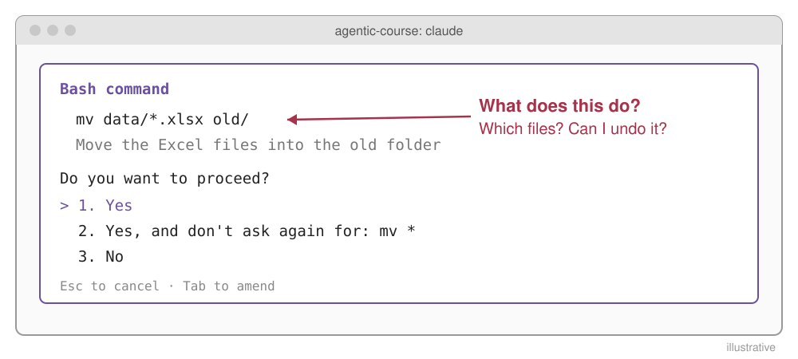
mv does, which files data/*.xlsx means, where old/ is, and whether it can be undone.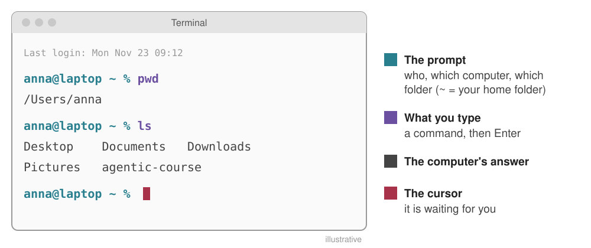
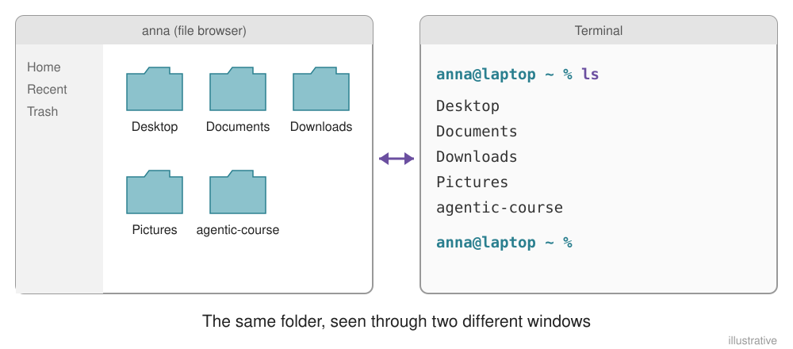
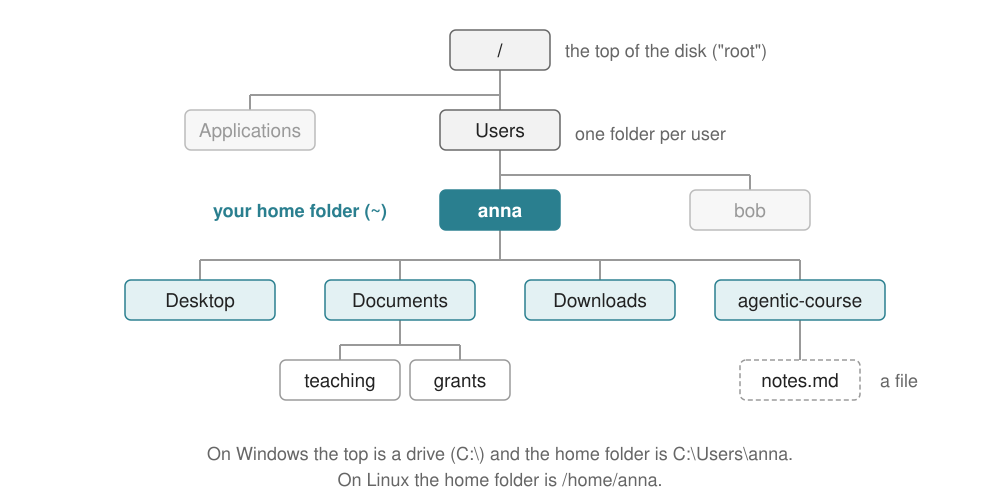
~ (tilde).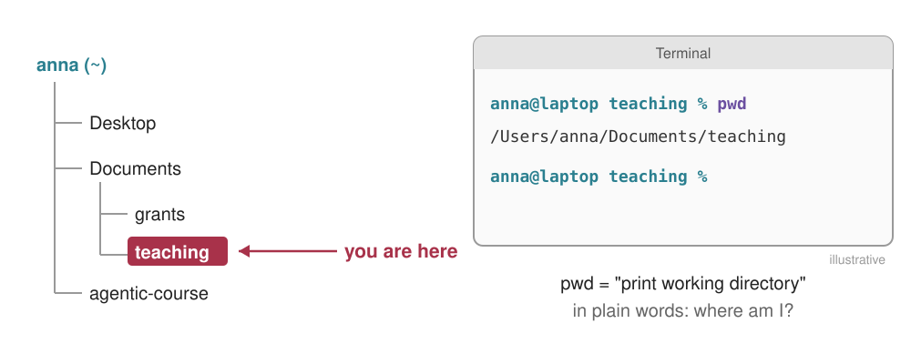
pwd prints where you are. The prompt usually shows the last part of it.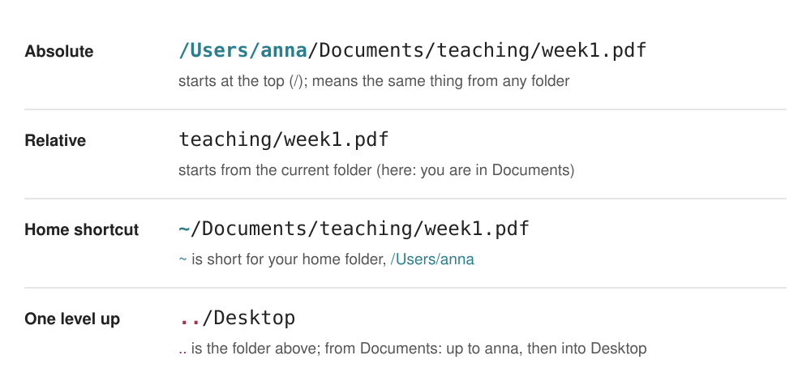
/ or C:\) and mean the same thing wherever you are.data/survey.csv means “the data folder here”.~ is your home folder; .. is the folder one level up; . is this folder.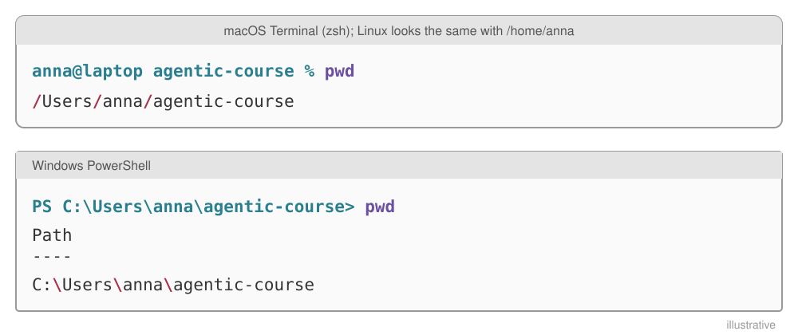
| macOS / Linux | Windows | |
|---|---|---|
| Terminal app | Terminal | PowerShell (in Windows Terminal) |
| Language | zsh or bash | PowerShell |
| Separator | / |
\ |
| Home folder | /Users/anna, /home/anna |
C:\Users\anna |
| Top of the disk | / |
C:\ |
| List files | ls |
ls or dir |
pwd, ls, cd, cd .. and mkdir work in PowerShell too. ~ works there as well.cd My Documents is read as two names.cd "My Documents".agentic-course, survey_2025.csv: no spaces, no å/ä/ö, lower case.| Command | Read it as | What you see |
|---|---|---|
pwd |
“where am I?” | the full path of the current folder |
ls (Windows also dir) |
“what is in here?” | the names of files and folders |
cd agentic-course |
“go into agentic-course” | nothing; the prompt changes |
cd .. |
“go up one level” | nothing; the prompt changes |
mkdir agentic-course |
“make a folder called agentic-course” | nothing (silence means it worked) |
Two more for convenience:
cd on its own (macOS/Linux) or cd ~ (all systems) takes you home.open . / explorer . / xdg-open . opens the current folder in the file browser.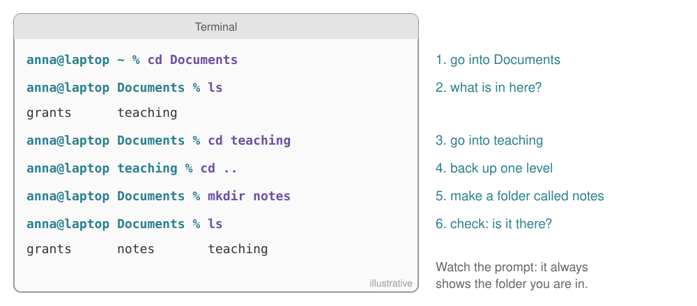
cd moves you; ls looks around; mkdir adds a folder where you stand.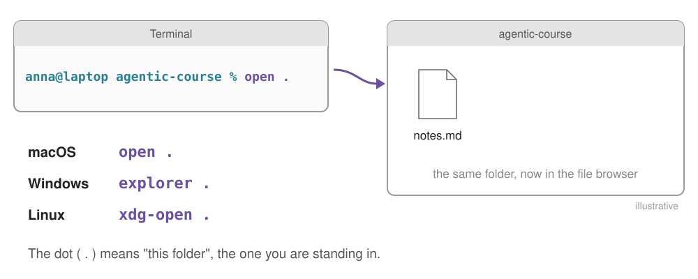
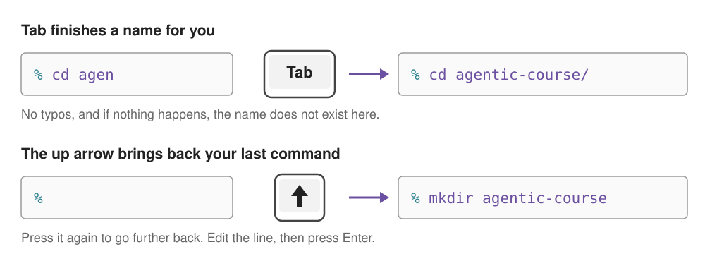
| You see | It means | Try |
|---|---|---|
No such file or directory / Cannot find path |
the name is not in the current folder | pwd, ls, then Tab to complete |
command not found / is not recognized |
the program is not installed, or a typo | check spelling; ask whether it is installed |
File exists / already exists |
mkdir found a folder with that name |
nothing; the folder is already there |
Permission denied / Access is denied |
your account may not touch that place | you are probably in the wrong folder |
pwd and ls.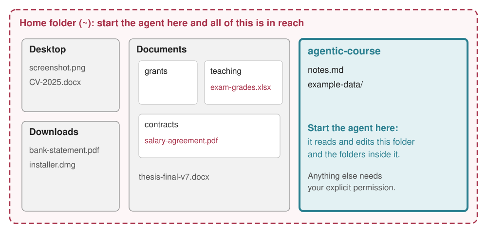
claude or codex in the current folder. That folder becomes its working folder.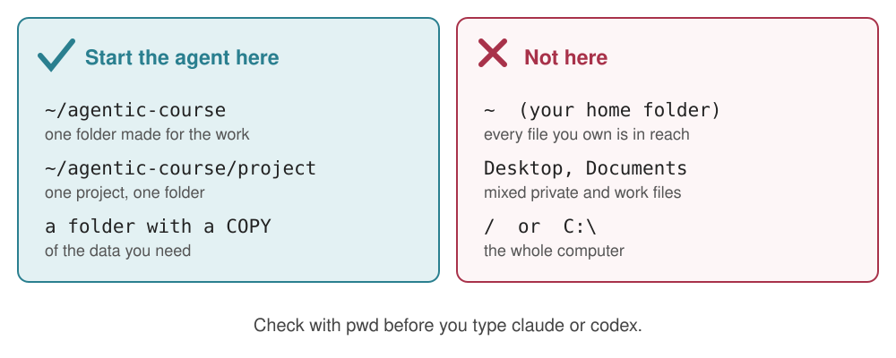
pwd before you type claude or codex.macOS / Linux (Terminal)
# is a comment; you do not need to type it.~/agentic-course rather than Desktop or Documents. Those are often synced to iCloud or OneDrive, and macOS asks extra permission questions for them.cd agentic-course, then start the agent./status and change it with /permissions.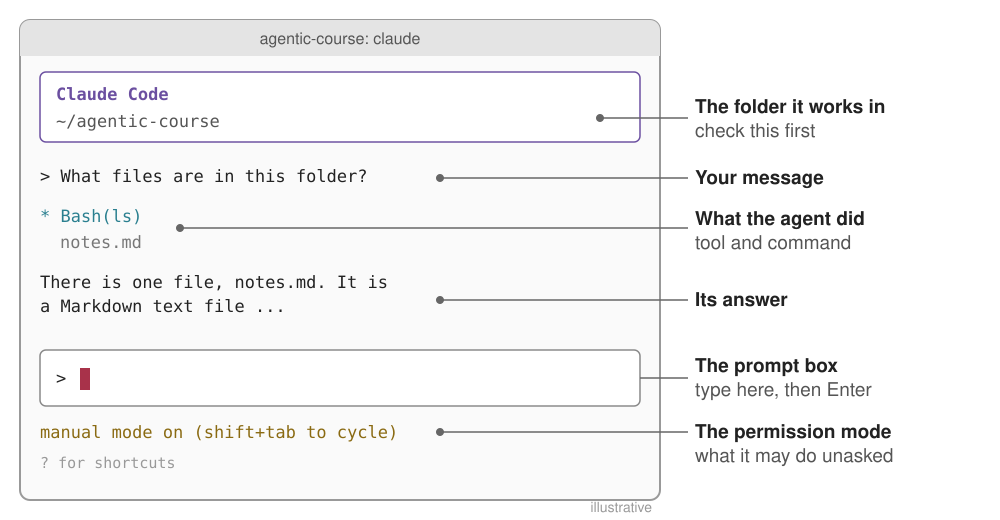
Bash(ls), Write(notes.md)) followed by its answer.| You want to | Claude Code | Codex |
|---|---|---|
| See the commands | /help, or type / |
type / |
| Stop the agent mid-task | Esc | Esc (see the hint on screen) |
| Start a fresh conversation | /clear |
/new (or /clear, which also clears the screen) |
| See the current settings | /status (version, model, account) |
/status (model, permissions, folders) |
| Change what it may do unasked | Shift+Tab (cycles modes) | /permissions |
| Exit | /exit, or Ctrl+C twice |
/exit or /quit, or Ctrl+C |
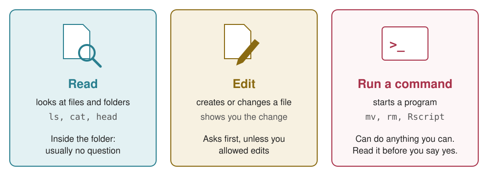
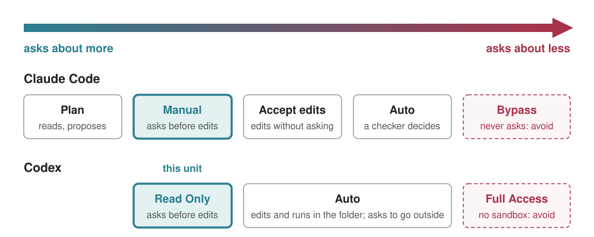
/permissions switches levels; /status shows the current one.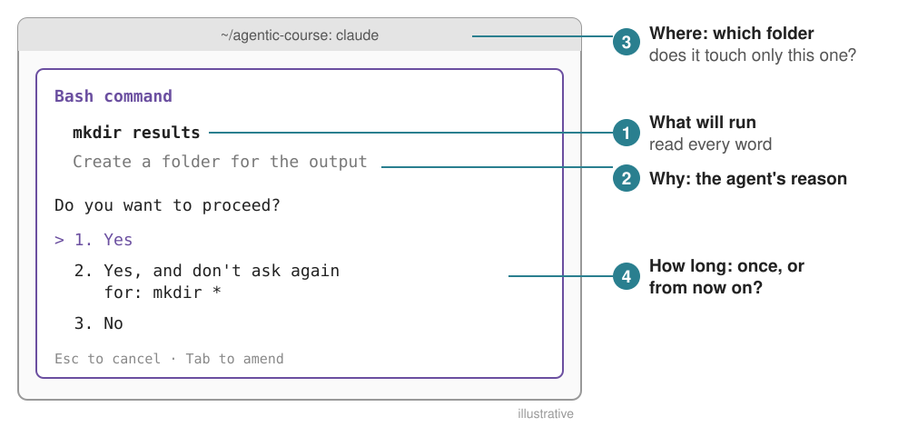
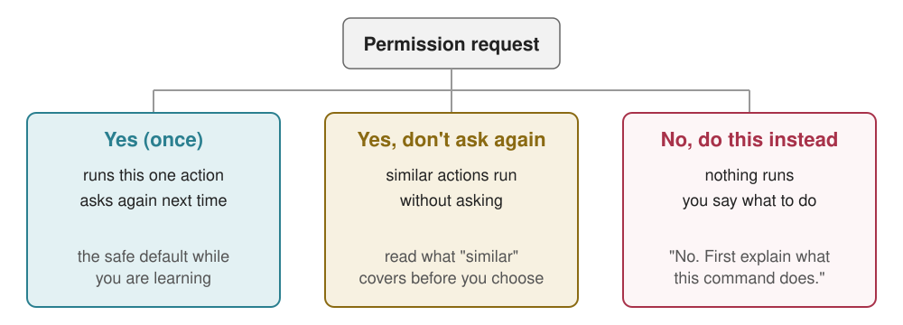
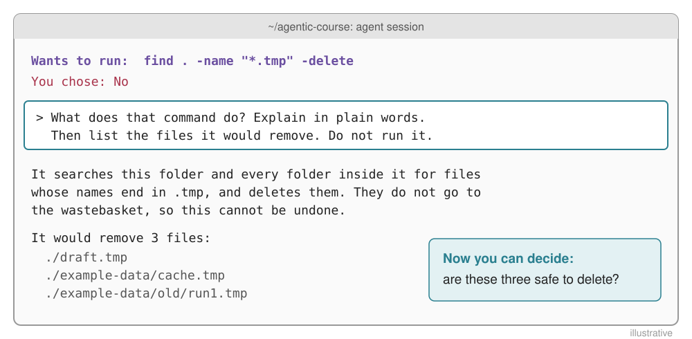
| Command | Plain English | Risk |
|---|---|---|
ls, pwd |
list files; show the current folder | none: only looks |
cat file, head file |
show a file; show its first lines | none: only looks |
mkdir name |
make a folder | low |
cp a b |
copy a to b | low, but can overwrite b |
mv a b |
move or rename a to b | medium: overwrites b without warning |
rm file, rm -r folder |
delete; delete a folder and all inside | high: no wastebasket, no undo |
Rscript x.R, python x.py |
run an R or Python script | depends on the script: ask what it does |
git status, git log |
show what changed; show history | none: only looks |
git add, git commit |
save a snapshot | low (see Git as undo button) |
curl, pip install, install.packages |
fetch from or install from the internet | ask: what, and from where? |
rm and mv deserve a slow read every time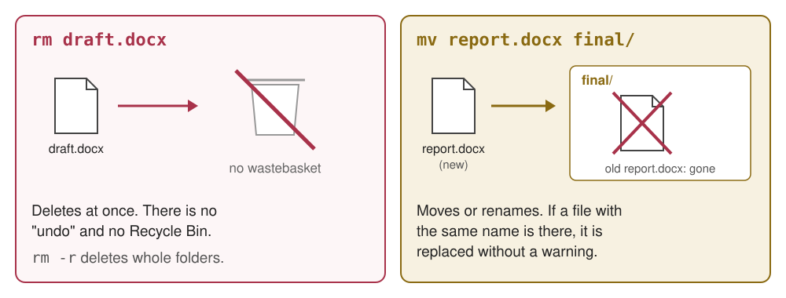
rm or mv, ask yourself: is there a copy? If not, ask the agent to list the files first.pwd first.rm * or mv * for a project removes your last check. Prefer plain yes./help when in doubt.| Concept | Key fact |
|---|---|
| Terminal | a text window onto the same files as the file browser |
Folder tree, home ~ |
files sit in nested folders; your home folder holds Desktop, Documents, … |
| Current folder | where commands run; pwd shows it, the prompt hints at it |
| Paths | absolute from the top (/, C:\); relative from where you stand; .. = up one |
| Five commands | pwd, ls, cd, cd .., mkdir; plus open . / explorer . |
| Starting folder | the agent works in the folder you start it in: one course folder, never home |
| Session control | Esc stops; /help or /; /clear or /new; /exit |
| Permission modes | Claude Code: Shift+Tab (Manual for now); Codex: /permissions (Read Only for now) |
| Permission request | what, why, where, how long; yes once / yes always / no and say what |
| Escape hatch | “What does this command do? Do not run it.” |
rm, mv |
no wastebasket; silent overwrite. Is there a copy? |
Next (First delegations): three small jobs in your course folder (organise a messy folder, clean an Excel file, summarise a few PDFs into a table), reading and approving each step as you go.